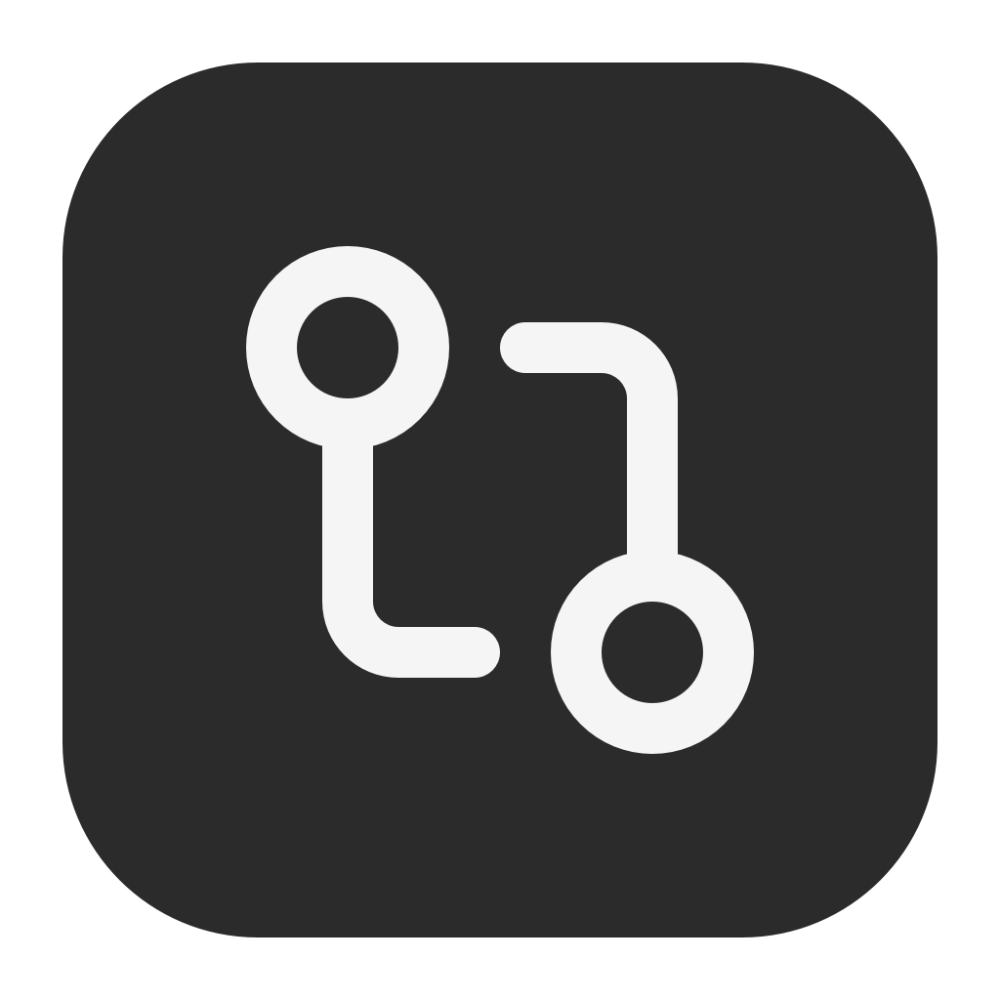
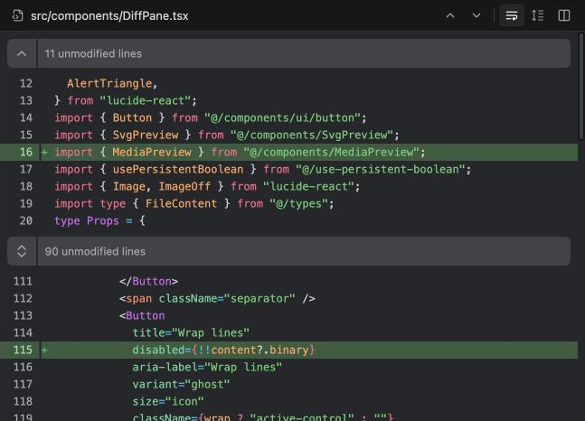
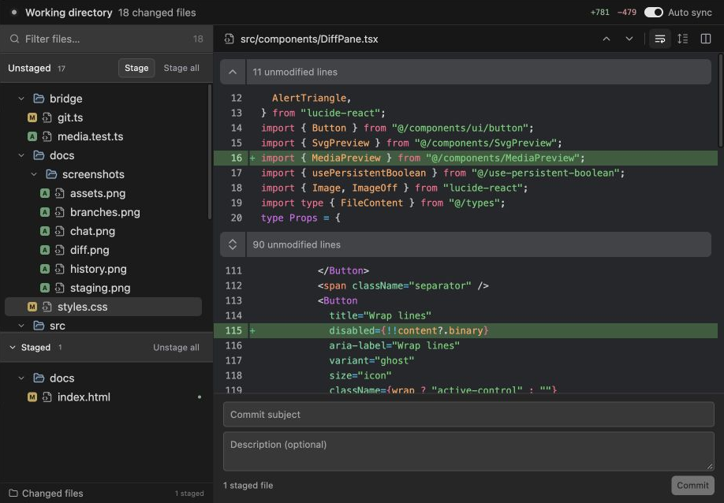
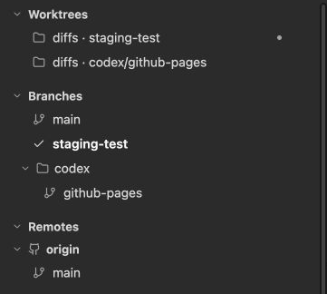
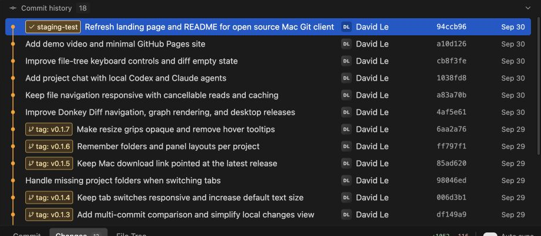
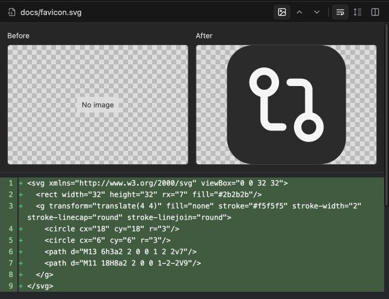
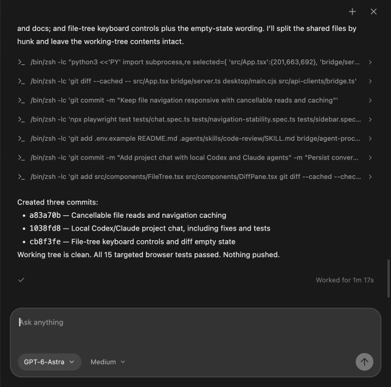

Git basics
- Fetch, pull, and push
- File and folder staging
- Commit staged changes
- Create and manage stashes
- Optional automatic sync

Donkey DiffReview changes, manage branches, and commit your work.
Read diffs side by side or in a single view. Expand the full file when you need more context, and filter the file tree to find what you’re looking for.

Double-click a file or folder to stage it. Review your staged changes, write a message, and commit. Everything else stays in your working directory.

Switch between projects in tabs. Create a branch for a change, or open a worktree to keep another branch checked out in its own folder.

Browse recent commits and inspect the files they changed. Select two commits to compare their snapshots and see the difference between them.

See SVG assets rendered alongside their source. Compare before and after previews in a diff, or preview the current SVG while browsing files.

Ask an agent to explain code, make an edit, or review your changes.
